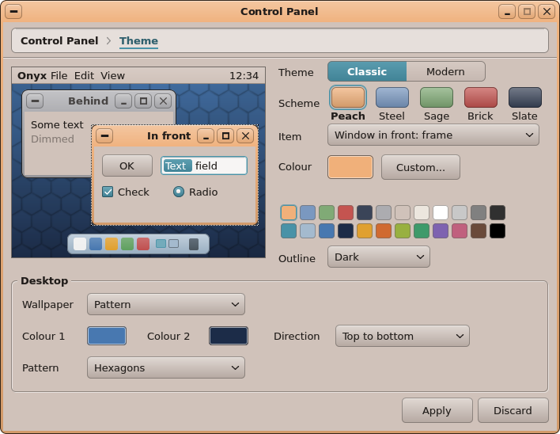
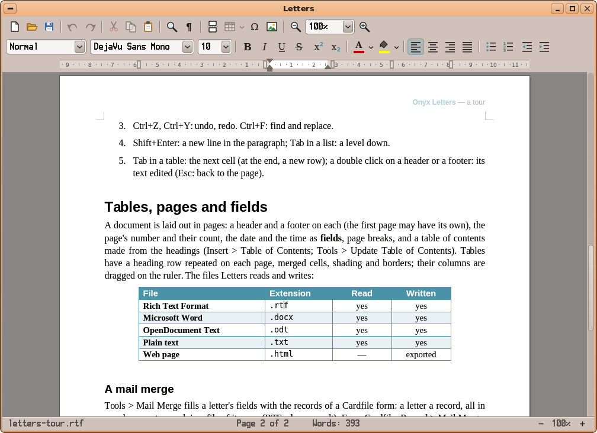
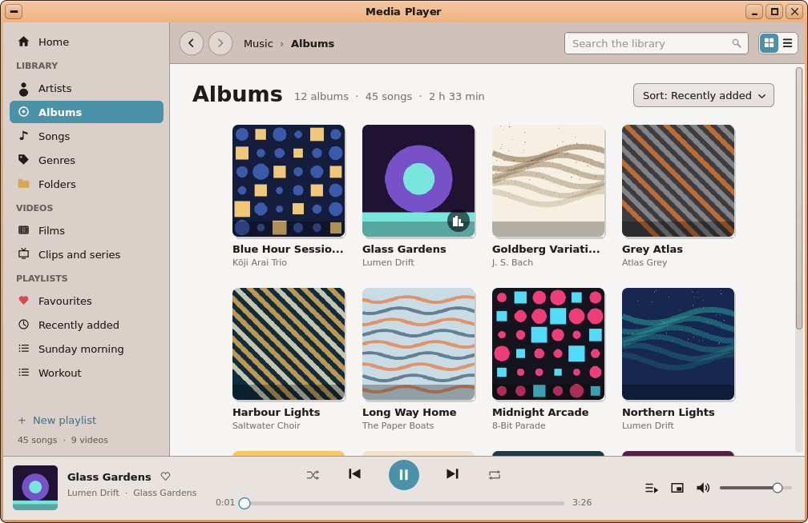

A complete computer.
On a Raspberry Pi 4.
Onyx is a homemade operating system with its own desktop, its own office suite, its own web browser and more than 50 apps.


The desktop
Everything in its place.
A menu bar at the top, a dock at the bottom. Your apps sit in drawers, your windows spread across several workspaces. You find your way around in the first minute.

Work
Write it. Work it out. Present it.
Letters for your writing, a spreadsheet for your numbers, Slides for your talks. They open and save Word, Excel and PowerPoint files, export to PDF and print to your network printer.
- .docx, .xlsx and .pptx files
- PDF export
- Printing with no driver to install

The web and your people
Today’s web. And your messages.
Jet Browser shows modern websites, video and sound included. Mail brings your Gmail, Outlook, iCloud or any other account into one inbox. And your Telegram conversations come along.
The internet on Onyx
Create
Draw. Compose. Build.
Paint on layers in Paint, touch up your photos, write a song in Koton, the music studio, or design a part for 3D printing in 3DForge.
The creative apps
Your photos, music and films
Your library, in order.
Photos sorts your pictures by day and by album. Media Player finds your music and videos by itself, and picks the film up where you left it.

Play
Sixteen games to start with.
Cards, bricks, a pinball table, puzzles: the games are already there. And if you kept the games of your old consoles, the Game Library sorts and starts them.
No console game ships with Onyx.
All the games
Make it yours.
Seven looks, from peach to dark coffee, and wallpapers that take your colours. Two clicks and the desktop is yours.

Always up to date.
Onyx checks for updates every day and tells you. The Package Manager installs the system and the apps in one click, and offers new ones.

And if you’re the curious kind.
Learn to program by guiding a turtle, wire up logic circuits, write your own apps in BASIC or drive the Raspberry Pi’s pins from the screen.
Learn and tinker
More than 50 apps, ready to use.

Letters. The word processor. Letters, reports, properly laid‑out documents.

Spreadsheet. The spreadsheet. Your budgets, your lists, your charts.

Slides. Presentations. Polished slides, shown full screen.
Jet Browser. The Onyx web browser, built on WebKit, the engine behind Safari.
Mail. All your mail accounts in one inbox.

Telegram. Your Telegram account, in a messenger with early-2000s charm.
Paint. Drawing and painting on layers.
Photos. All your photos in one place, sorted by day.

Media Player. Your music and your videos, in one library.

Koton. The music studio. Write a song starting from its chords.

3DForge. Design parts for 3D printing, step by step.

Calendar. The planner. Your appointments by day, week or month.
All it takes is a microSD card.
Prepare the card, plug in your Raspberry Pi 4, and Onyx welcomes you.